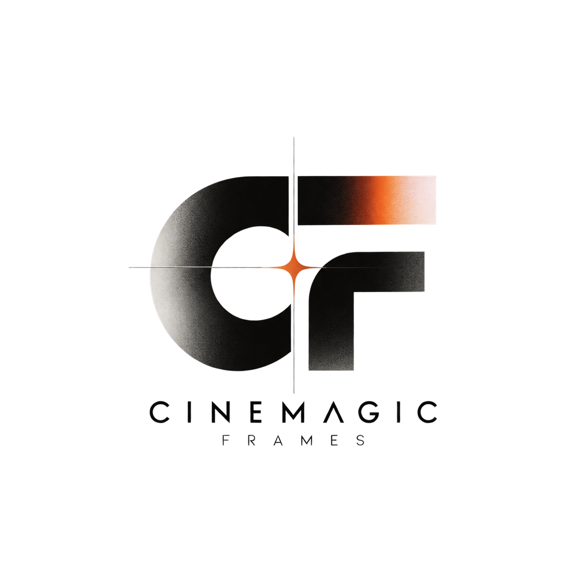

Four pieces from the feed. Pick a card to watch the original reel on Instagram.
Film · Cinematography
Short-form film · Editing
Photography · Visual direction
Film · Creative production
More work lives on @cinemagicframess. The cards use graphic covers and link straight to the reels.